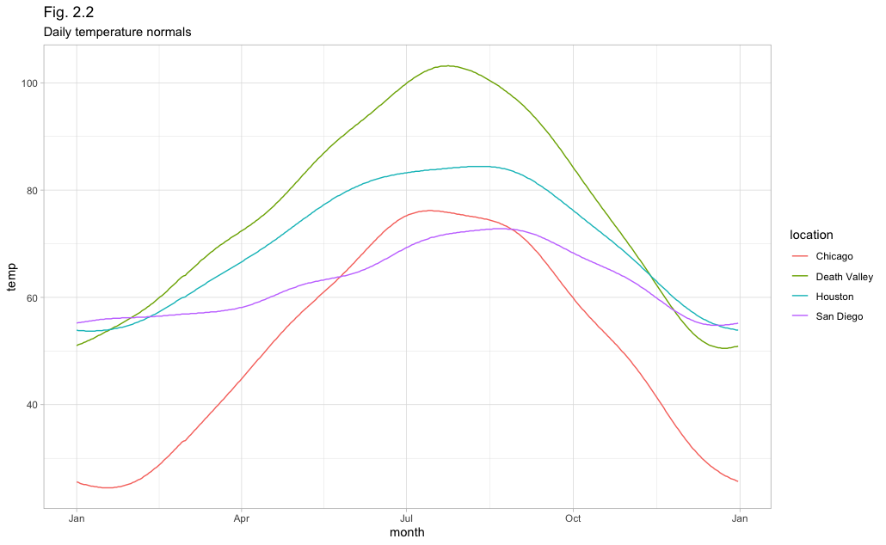
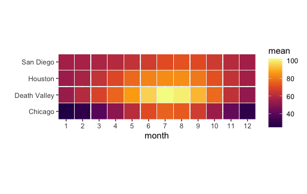

geom_line & heatmap(ncdc_normal)
code
visualation
R
데이터 시각화 3주차 실습
library(ggplot2)
library(dplyr)
library(tidyverse)
library(palmerpenguins)geom_line()
#데이터 불러오기 1)
#data_file <- choose.files() #경로지정해서 데이터 불러오기
#ncdc_normals <- read.csv(data_file)
#데이터 불러오기 2)
ncdc_normals <- read.csv("/Users/jungwoolee/Desktop/college/Data Visualization/ncdc_normals.csv")
ncdc_normals
#데이터 확인
ncdc_normals %>% dim()
ncdc_normals %>% head()
ncdc_normals %>% summary()
ncdc_normals %>% sapply(class) #class로 합쳐 문자형인지 숫자형인지 확인
ncdc_normals$date <- ncdc_normals$date %>% as.Date("%Y-%m-%d") #날짜가 문자형이기 때문에 날짜형식으로 바꿈
ncdc_normals %>% sapply(class) #문자,숫자형 다시 확인 #data가 Date로 바뀜#station_id 갯수
ncdc_normals$station_id %>% unique() %>% length()
#station_id,location을 데이터 프레임으로 만들기
station_loc <- data.frame(station_id = c("USW00014819","USC00042319","USW00093107","USW00012918"),
location = c("Chicago","Death Valley","San Diego","Houston"))
station_loc
#기존 데이터와 데이터 프레임 합치기
temps_long <- ncdc_normals %>% inner_join(station_loc, by="station_id") #station_id기준으로 합쳐라
temps_long %>% head()# x축에 표시할 눈금
date_s <- "0000-01-01" %>% as.Date("%Y-%m-%d")
date_e <- "0001-01-01" %>% as.Date("%Y-%m-%d")
break_date <- seq.Date(date_s, date_e, by = "3 month")#결과 데이터로 ggplot 그리기
#aes : 어떤 데이터로 그릴거니?
#geom_line : 어떤 라인? #theme_light : 그래프 뒷배경 밝게
ggplot(temps_long,aes(x=date,y=temperature,color=location)) +
geom_line() +
scale_x_date(name = "month", breaks = break_date,
labels = c("Jan", "Apr", "Jul", "Oct", "Jan")) +
scale_y_continuous(name = "temp",
#limits = c(0,100)
) +
ylab("Temp") +
labs(title = "Fig. 2.2", subtitle = "Daily temperature normals") +
theme_light() 
heat map
# 월 평균
mean_temps <- temps_long %>%
group_by(location, month) %>%
summarise(mean = mean(temperature)) %>%
ungroup() %>%
mutate(month = factor(month %>% paste(),
levels = 1:12 %>% paste()))
mean_temps
# paste = 글자로 바꿔줌# ggplot + geom_tile + fill color
ggplot(mean_temps, aes(x=month, location, fill = mean)) +
geom_tile(width = .95, height = .95) +
coord_fixed(expand = F) +
scale_fill_viridis_c(option = "B", begin = 0.15, end = 0.98) +
ylab("")
# ylab(NULL) = 제목 자체를 빼서 그래프가 확장됨